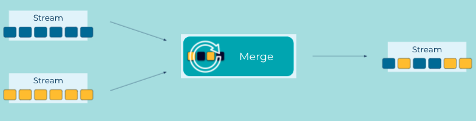

Event Stream Merger
An Event Streaming Application may contain multiple Event Stream instances. But in some cases it may make sense for the application to merge the different event streams into a single event stream, without changing the individual events. While this may seem logically related to a join, the merge is a completely different operation. A join produces results by combining events with the same key to produce a new event, possibly of a different type. Whereas the merge combines the events from multiple streams into a single stream, but the individual events are unchanged and remain independent of each other.
Problem
How can an application merge different event streams?
Solution

Implementation
The Kafka Streams DSL provides a merge operator which merges two streams into a single stream. You can then take the merged stream and use any number of operations on it.
KStream<String, Event> eventStream = builder.stream(...);
KStream<String, Event> eventStreamII = builder.stream(...);
KStream<String, Event> allEventsStream = eventStream.merge(eventStreamII);
allEventsStream.groupByKey()...
Considerations
- Kafka Streams provides no guarantees on the processing order of records from the underlying streams.
- When merging streams the key and value types must be the same.
References
- Kafka Tutorial: Merging with Kafka Streams.
- Kafka Tutorial: Merging streams with ksqlDB.